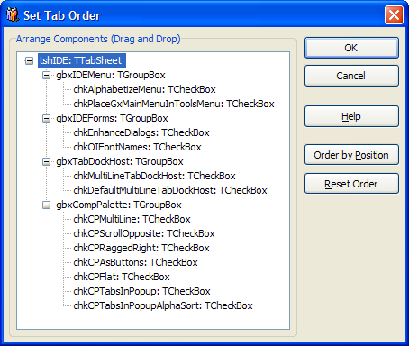

Set Tab Order |
|
This expert enables you to quickly modify the tab order of a form's components. There are two major modes of usage for this expert. If you hold down the Shift key and select multiple components, the expert assumes you have selected components that share a parent and you wish to set the tab order for those components to the selection order (this mode is not supported in Delphi 2005, due to an IDE bug). If a single component is selected that contains child components, the expert attempts to guess a good tab order for those child components based on their relative Top/Left positions and displays the suggested order in the Arrange Components tree. You can rearrange the suggested tab order displayed in the tree using drag and drop. As you select a component in the tree, it will be selected on the underlying form to ease identification.  Notes: This expert does not modify the TabStop property of your controls and will ignore components without a TabOrder property.
|